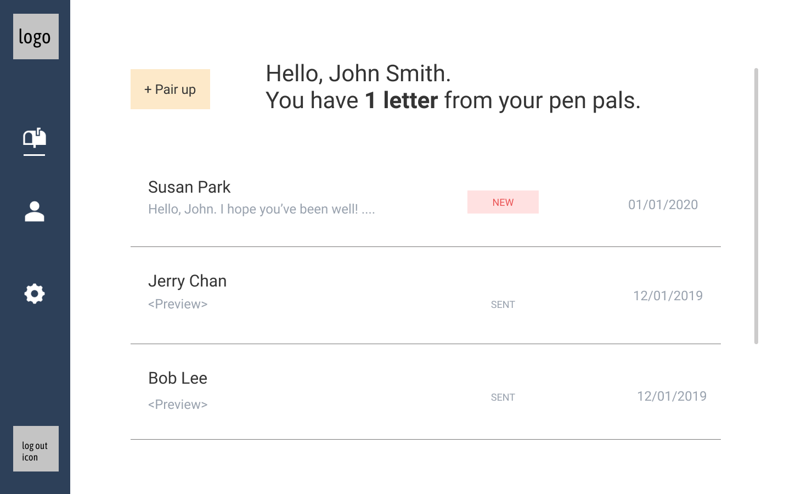
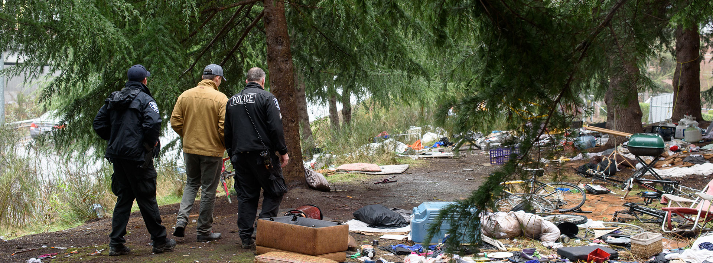
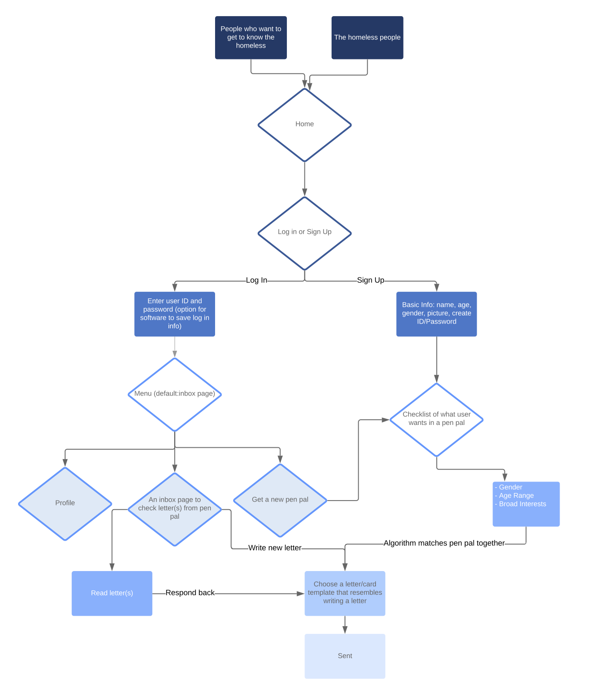
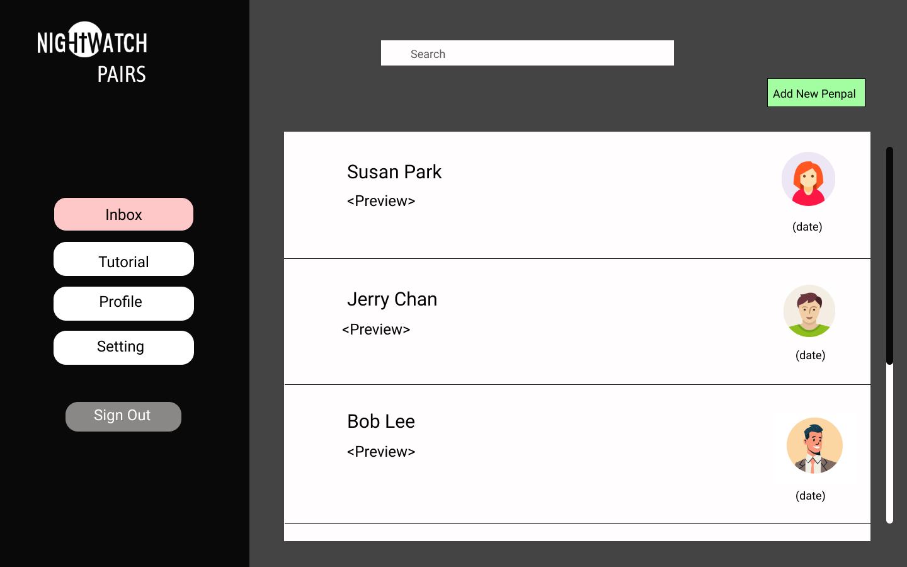

6 months ~
UX Designer

Throughout this project, “houseless” is used instead of “homeless”. The term is adopted and preferred by people living in a housing unstable world. Home is not restricted to a physical place but rather, can be used to describe community, a comfortable environment, or wherever safety and serenity lie. It is a fluid experience, and anyone can have a home.
My team and I partnered with Operation Nightwatch, a nonprofit organization that provides a free dinner, overnight shelter, and other services to those in need. They asked us to solve an information problem to improve houseless adult’s quality of life.

My team and I read articles on the crisis to identify information problems and the context around houselessness. We learned that it is caused by structural components, such as the criminal justice system not recognizing systemic racial inequality and policies, and individual.[1]
Longitudinal studies over the past 30 years suggests that the majority of the public was concerned about houselessness. However, attitudes varied by gender, income level, and political affiliation. Participants who identified as Democrat, a woman, and low-income were more likely to report compassion, positive community effects, and belief in structural over individual causes.[2]
01. “Homelessness Response: The Roots of the Crisis”, The City of Seattle, https://www.seattle.gov/homelessness/the-roots-of-the-crisis.
02. 2. Jack Tsai; Crystal Y.S Lee; Jianxuan Shen; Steven M. Southwick; Robert H. Pietrzak, “Public exposure and attitudes about homelessness”, Journal of Community Psychology 47, no. 1 (Jan 2019): 76-92.
We quickly realized that our project could not solve houselessness or one of its root causes in an instant because they were interconnected. A little stumped, we decided to narrow down after talking to our stakeholders. We had three stakeholders in consideration – homeless adults, Operation Nightwatch, and our mentor Professor Hendry.
Houseless people wanted to be and feel secure. One interviewee mentioned, “I wish people can rate shelters. Things like whether they’re well kept, safe, clean, or experienced.”
Operation Nightwatch cared about its volunteers and wanted the houseless to make physically and mentally healthy choices. We noted that there may be value tensions if they discovered houseless visitors doing drugs.
Our mentor and team discussed not being exposed to danger. We acknowledged that because we exist in a community, feeling welcomed, seen, and heard would help create a safe space.
To reiterate, our goal is to “solve an information problem to improve houseless adults’ quality of life.” All three of our stakeholders valued safety and there were overlapping desires for a safe space. We asked, “How do we address the prejudice and stereotypes toward the houseless?”.
We thought of ways the houseless could engage in a conversation with the non-houseless and share their stories. One idea was an instant messaging app, where users get to talk to anyone on the platform.
The houseless at Operation Nightwatch liked the emphasis on social connections over being safe from harm. The non-houseless also responded positively but raised concerns on violence, drug use, derogatory comments, and overall uncomfortable behavior coming from either user.
Instead of an instant messaging app, we designed a web application that mimics a post card exchange between pen pals. We would implement strict rules to prevent any sort of harassment from occuring.

01. User flowchart.

02. Low-fidelity wireframe. This frame is the "menu" mentioned on the flowchart.
01. The user flowchart consists of 4 flows: onboarding, logging in, getting matched with a pen pal, and sending a post card.
02. The flowchart acted as a framework and we built our low-fidelity wireframes accordingly. We conducted a usability test to discover whether users understood the purpose behind each feature.
The usability issues are addressed, the design is more consistent, and users only share their biography and name in their profile. Please come back in March for more updates. You can also find the final product at the University of Washington Undergraduate Research Symposium on May 15, 2020.
(c) Sarah Park 2020